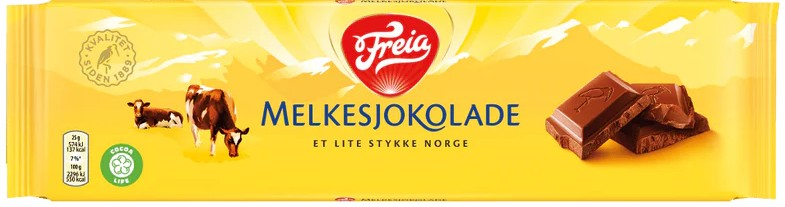
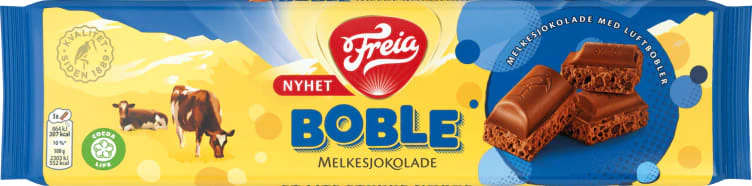
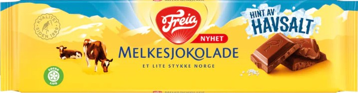

- The Classic Freia Milk Chocolate Bar
- Freia Milk Chocolate tastes exceptional because it combines fresh Norwegian milk with high-quality cocoa for a smooth, creamy texture. Its recipe is simple—just sugar, milk, cocoa butter, and cocoa mass—allowing natural flavors to shine. The chocolate melts evenly, creating a velvety mouthfeel and balanced sweetness without being overpowering. Fine grinding and conching enhance its silky consistency. Beyond taste, it carries cultural nostalgia, marketed as “a little piece of Norway,” which adds emotional value. This blend of premium ingredients, craftsmanship, and heritage makes Freia Milk Chocolate beloved for over a century.
- Nothing beats the OG.
- 
-
Freia Boble - Freia Boble Milk Chocolate is beloved for its airy texture created by tiny bubbles inside the chocolate. These bubbles make the bar lighter and allow it to melt faster on the tongue, releasing flavor more quickly and creating a creamy, almost mousse-like sensation. The aeration also changes the mouthfeel—less dense than regular milk chocolate, so it feels softer and more delicate. Combined with Freia’s classic recipe of rich milk and smooth cocoa, Boble offers a playful twist on traditional chocolate, making each bite feel light yet indulgent. This unique texture is what sets Boble apart from standard solid bars.
- Fun Fact: Freia Boble was in a legal battle against their main competitor, Stratos from Nidar, the first chocolate brand to incorperate the air bubbles into their chocolate. Freia had originally ripped off Staratos in both texture and packaging. This resulted in Freia being banned from using a spesific blue packaging for their chocolate.
- Learn more about the beef HERE ;
- 
- Sea Salt
- Sea salt in Freia Milk Chocolate enhances flavor through contrast and complexity. Salt reduces perceived sweetness, making the chocolate taste richer and more balanced. It also amplifies cocoa’s natural notes, highlighting subtle caramel and nutty undertones. Tiny salt crystals dissolve quickly, creating bursts of savory flavor that keep each bite interesting and elevate the overall experience. This interplay of sweet and salty stimulates multiple taste receptors, delivering a more rounded, satisfying sensation. By adding depth without overpowering the chocolate’s creamy texture, sea salt transforms a classic treat into a sophisticated indulgence that feels both comforting and exciting.
- Freia Milk Chocolate with a hint of sea salt provides a completely new taste experience to the well-known classic from 1906. Freia Milk Chocolate is made with milk from Norwegian cows and produced in the Freia Factory in Rodeløkka in the heart of Oslo. A little piece of Norway.
- 
Information
Freia Milk Chocolate is one of Norway’s most iconic confectionery products, beloved for its smooth texture and rich, creamy taste. First introduced in 1906 by the Freia company, it quickly became a staple in Norwegian households and remains a symbol of comfort and tradition. The chocolate is crafted using high-quality cocoa combined with fresh milk, which gives it its signature mild sweetness and velvety consistency.
Freia’s milk chocolate is more than just a treat—it’s deeply tied to Norwegian culture. For many, it evokes memories of family gatherings, holidays, and cozy winter evenings. Its popularity has endured for over a century, making it a nostalgic favorite across generations. The brand emphasizes sustainability and quality, sourcing cocoa responsibly to ensure ethical production.
Today, Freia Milk Chocolate is available in various forms, from classic bars to seasonal editions, and continues to hold a special place in Norway’s culinary heritage. Its simple yet indulgent flavor makes it perfect for enjoying on its own or as an ingredient in desserts. Whether shared with friends or savored quietly, Freia Milk Chocolate represents a timeless blend of tradition, quality, and pure enjoyment.
Freia Milk Chocolate stands out for its exceptional quality and heritage. Made with fresh Norwegian milk and premium cocoa, it delivers a smooth, creamy texture and balanced sweetness that melts perfectly on the tongue. Its simple recipe—sugar, milk, cocoa butter, and cocoa mass—ensures pure, natural flavors without unnecessary additives. Fine grinding and conching create a velvety mouthfeel, while its nostalgic identity as “a little piece of Norway” adds emotional value. For over a century, this combination of craftsmanship, high-quality ingredients, and cultural significance has made Freia Milk Chocolate a beloved classic and a benchmark for indulgent simplicity.
Here is a list of my favorite chocolate types from Freia;
While these three flavors are customer favorites, Freia additionally has so mnay more flavors to offer. They keep creating new flavors and combination that become hits.
On this awesome Tableu you can see the chocolate spend per country. Lets just say there is a reason why Norway is ranked where it is.

Back to top